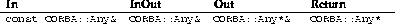

The CORBA specification provides for a type that can hold the value of any OMG IDL type. This type is known as type Any. The OMG also specifies a pseudo-object, TypeCode, that can encode a description of any type specifiable in OMG IDL.
In this chapter, an example demonstrating the use of type Any is presented. This is followed by sections describing the behaviour of type Any and TypeCode in omniORB2. For further information on type Any, refer to the C++ Mapping section of the CORBA 2 specification [OMG96a], and for more information on TypeCode, refer to the Interface Repository chapter in the CORBA core section of the CORBA 2 specification.
Before going through this example, you should make sure that you have read and understood the examples in chapter 2. The source code for this example is included in the omniORB2 distribution, in the directory src/examples/anyExample. A listing of the source code is provided at the end of this chapter.
Type Any allows one to delay the decision on the type used in an operation until run-time. To use type any in IDL, use the keyword any, as in the following example:
// IDL
interface anyExample {
any testOp(in any mesg);
};
The operation testOp() in this example can now take any value expressible in OMG IDL as an argument, and can also return any type expressible in OMG IDL.
Type Any is mapped into C++ as the type CORBA::Any. When passed as an argument or as a result of an operation, the following rules apply:

So, the above IDL would map to the following C++
// C++
class anyExample_i : public virtual _sk_anyExample {
public:
anyExample_i() { }
virtual ~anyExample_i() { }
virtual CORBA::Any* testOp(const CORBA::Any& a);
};
The question now arises as to how values are inserted into and removed from an Any. This is achieved using two overloaded operators: <<= and >>= .
Two insert a value into an Any, the <<= operator is used, as in this example:
// C++ CORBA::Any an_any; CORBA::Long l = 100; an_any <<= l;
Note that the overloaded <<= operator has a return type of void.
To extract a value, the >>= operator is used, as in this example (where the Any contains a long):
// C++ CORBA::Long l; an_any >>= l; cout << "This is a long: " << l << endl;
The overloaded >>= operator returns a CORBA::Boolean. If an attempt is made to extract a value from an Any when it contains a different value (e.g. an attempt to extract a long from an Any containing a double), the overloaded >>= operator will return False; otherwise it will return True. Thus, a common tactic to extract values from an Any is as follows:
// C++
CORBA::Long l;
CORBA::Double d;
char* str;
if (an_any >>= l) {
cout << "Long: " << l << endl;
}
else if (an_any >>= d) {
cout << "Double: " << d << endl;
}
else if (an_any >>= str) {
cout << "String: " << str << endl;
}
else {
cout << "Unknown value." << endl;
}
It is also possible to insert and extract constructed types and object references from an Any. omniidl2 will generate insertion and extraction operators for the constructed type. Note that it is necessary to specify the -a command-line flag when running omniidl2 in order to generate these operators. The following example illustrates the use of constructed types with type Any:
// IDL
struct testStruct {
long l;
short s;
};
interface anyExample {
any testOp(in any mesg);
};
Upon compiling the above IDL with omniidl2 -a, the following overloaded operators are generated:
Operators of this form are generated for all constructed types, and for interfaces.
The first operator, (1) , copies the constructed type, and inserts it into the Any. The second operator, (2) , inserts the constructed type into the Any, and then manages it. Note that if the second operator is used, the Any consumes the constructed type, and the caller should not used the pointer to access the data after insertion. The following is an example of how to insert a value into an Any using operator (1) :
// C++ CORBA::Any an_any; testStruct t; t.l = 456; t.s = 8; an_any <<= t;
The third operator, (3) , is used to extract the constructed type from the Any, and can be used as follows:
testStruct* tp;
if (an_any >>= tp) {
cout << "testStruct: l: " << tp->l << endl;
cout << " s: " << tp->s << endl;
}
else {
cout << "Unknown value contained in Any." << endl;
}
As with basic types, if an attempt is made to extract a type
from an Any that does not contain a value of that type, the extraction
operator returns False. If the Any does contain that type, the extraction
operator returns True. If the extraction is successful, the caller's pointer
will point to memory managed by the Any. The caller must not delete or
otherwise change this storage, and should not use this storage after the
contents of the Any are replaced (either by insertion or assignment), or
after the Any has been destroyed  . In particular, management of
the pointer should not be assigned to a _var type.
. In particular, management of
the pointer should not be assigned to a _var type.
If the extraction fails, the caller's pointer will be set to point to null.
Note that there are special rules for inserting and extracting arrays (using _forany types), and for inserting and extracting booleans, octets, chars, and bounded strings. Please refer to section 16.14 of the C++ Mapping section of the CORBA 2 specification [OMG96a] for further information.
This section contains some notes on the use and behaviour of type Any in omniORB2.
To generate type Any insertion and extraction operators for constructed types and interfaces, the -a command line flag should be specified when running omniidl2.
When an attempt is made to extract a type from an Any, the TypeCode of the type is checked for equality with the TypeCode of the type stored by the Any. omniORB2 will ignore any alias TypeCodes ( tk_alias) when making this comparison. Examples:
// IDL 1
typedef double Double1;
struct Test1 {
Double1 a;
};
------
// IDL 2
typedef double Double2;
struct Test1 {
Double2 a;
};
If an attempt is made to extract the type Test1 defined in IDL 1 from an Any containing the Test1 defined in IDL 2, this will succeed (and vice-versa), as the two types differ only by an alias.
Note that type Any does not manage object reference types - it is unclear in the CORBA specification whether this is required or not. Therefore, the programmer should release object references and pseudo-objects (such as TypeCode) that have been extracted from an Any. Type Any will, however, manage constructed types (as per the CORBA 2 specification) - constructed types extracted from an Any should not be deleted, as they will be deleted by the Any when it is destroyed.
When a type is inserted into an Any, the Any stores both the value of the type and the TypeCode for that type. If there are any top-level tk_alias TypeCodes in the TypeCode, they will be removed from the TypeCode stored in the Any. Note that this does not affect the _tc_ TypeCode generated to represent the type (see section on TypeCode, below). This behaviour is necessary, as two types that differ only by a top-level alias can use the same insertion and extraction operators. If the tk_alias is not removed, one of the types could be transmitted with an incorrect tk_alias TypeCode. Example:
// IDL 3 typedef sequence<double> seqDouble1; typedef sequence<double> seqDouble2;
If either seqDouble1 or seqDouble2 is inserted into a TypeCode, the TypeCode stored will be for a sequence<double>, and not for an alias to a sequence<double>.
Some ORBs (e.g. Orbix) will not accept TypeCodes containing tk_alias TypeCodes. When using type Any while interoperating with these ORBs, it is necessary to remove tk_alias TypeCodes from throughout the TypeCode representing a constructed type.
While omniORB2 will always remove top-level aliases, it doesn't remove aliases contained in a constructed type (for example, Double1 in the struct Test1 in example 1, above). To remove all tk_alias TypeCodes from TypeCodes stored in Anys, supply the -ORBtcAliasExpand 1 command-line flag when running an omniORB2 executable. There will be some (small) performance penalty when inserting values into an Any.
Note that the _tc_ TypeCodes generated for all constructed types will contain the complete TypeCode for the type (including any tk_alias TypeCodes), regardless of whether the -ORBtcAliasExpand flag is set to 1 or not.
omniORB2 does not yet support recursive TypeCodes. This means that types such as the following can not be inserted or extracted from an Any:
// IDL 4
struct Test4 {
sequence<Test4> a;
};
If these types are specified in IDL, omniidl2 will not generate Any insertion/
extraction operators, so an attempt to insert/extract them will result in
compile-time errors. Similarly, it won't generate a _tc_ TypeCode for
the type. If another type contains a type which is recursive, operators won't
be generated for that type either, and so on. Recursive TypeCodes will be
supported in a future release of omniORB2.
If using the type-unsafe Any constructor, or the CORBA::Any::replace() member function, ensure that the value returned by the CORBA::Any::value() member function and the TypeCode returned by the CORBA::Any::type() member function are used as arguments to the constructor or function. Using other values or TypeCodes may result in a mismatch, and is undefined behaviour.
Note that a non-CORBA 2 function,
CORBA::ULong CORBA::Any::NP_length() constis supplied. This member function returns the length of the value returned by the CORBA::Any::value() member function. It may be necessary to use this function if the Any's value is to be stored in a file.
Inserting and extracting simultaneously from the same Any (in 2 different threads) is undefined behaviour.
Extracting simultaneously from the same Any (in 2 or more different threads) may result in a memory leak if the type being extracted is a constructed type. It was decided not to mutex the Any, as this condition should rarely arise, and adding a mutex would lead to performance penalties.
This section contains some notes on the use and behaviour of TypeCode in omniORB2
When using TypeCodes in IDL, note that they are defined in the CORBA scope. Therefore, CORBA::TypeCode should be used. Example:
// IDL 5
struct Test5 {
long length;
CORBA::TypeCode desc;
};
Inclusion of the file orb.idl in IDL using CORBA::TypeCode is optional. An empty orb.idl file is provided for compatibility purposes.
To generate a TypeCode for constructed types, specify the -a command-line flag when running omniidl2. This will generate a _tc_ TypeCode describing the type, at the same scope as the type (as per the CORBA 2 specification). Example:
// IDL 6
struct Test6 {
double a;
sequence<long> b;
};
A TypeCode, _tc_Test6, will be generated to describe the struct Test6. The operations defined in the TypeCode interface (see section 6.7.1 of the CORBA 2 specification [OMG96a] ) can be used to query the TypeCode about the type it represents.
The CORBA::TypeCode::equal() member function will return true only if the two TypeCodes are exactly the same. tk_alias TypeCodes are included in this comparison, unlike the comparison made when values are extracted from an Any (see section on Any, above).
If one of the TypeCodes being checked is a tk_struct, tk_union, tk_enum, or tk_alias, and has an empty repository ID parameter, then the repository ID parameter will be ignored when checking for equality. Similarly, if the name or member_name parameters of a TypeCode are empty strings, they will be ignored for equality checking purposes. This is because a CORBA 2 ORB does not have to include these parameters in a TypeCode (see section 12.3.4 of the Interoperability section of the CORBA 2 specification [OMG96a]). Note that these (optional) parameters are included in TypeCodes generated by omniORB2.
// anyExample_impl.cc - This is the source code of the example used in
// Chapter 9 "Type Any and TypeCode" of the omniORB2
// users guide.
//
// This is the object implementation.
//
// Usage: anyExample_impl
//
// On startup, the object reference is registered with the
// COS naming service. The client uses the naming service to
// locate this object.
//
// The name which the object is bound to is as follows:
// root [context]
// |
// text [context] kind [my_context]
// |
// anyExample [object] kind [Object]
//
#include <iostream.h>
#include "anyExample.hh"
static CORBA::Boolean bindObjectToName(CORBA::ORB_ptr,CORBA::Object_ptr);
class anyExample_i : public virtual _sk_anyExample {
public:
anyExample_i() { }
virtual ~anyExample_i() { }
virtual CORBA::Any* testOp(const CORBA::Any& a);
};
CORBA::Any*
anyExample_i::testOp(const CORBA::Any& a) {
cout << "Any received, containing: " << endl;
#ifndef NO_FLOAT
CORBA::Double d;
#endif
CORBA::Long l;
char* str;
testStruct* tp;
if (a >>= l) {
cout << "Long: " << l << endl;
}
#ifndef NO_FLOAT
else if (a >>= d) {
cout << "Double: " << d << endl;
}
#endif
else if (a >>= str) {
cout << "String: " << str << endl;
}
else if (a >>= tp) {
cout << "testStruct: l: " << tp->l << endl;
cout << " s: " << tp->s << endl;
}
else {
cout << "Unknown value." << endl;
}
CORBA::Any* ap = new CORBA::Any;
*ap <<= (CORBA::ULong) 314;
cout << "Returning Any containing: ULong: 314\n" << endl;
return ap;
}
int
main(int argc, char **argv)
{
CORBA::ORB_ptr orb = CORBA::ORB_init(argc,argv,"omniORB2");
CORBA::BOA_ptr boa = orb->BOA_init(argc,argv,"omniORB2_BOA");
anyExample_i *myobj = new anyExample_i();
myobj->_obj_is_ready(boa);
{
anyExample_var myobjRef = myobj->_this();
if (!bindObjectToName(orb,myobjRef)) {
return 1;
}
}
boa->impl_is_ready();
// Tell the BOA we are ready. The BOA's default behaviour is to block
// on this call indefinitely.
return 0;
}
static
CORBA::Boolean
bindObjectToName(CORBA::ORB_ptr orb,CORBA::Object_ptr obj)
{
CosNaming::NamingContext_var rootContext;
try {
// Obtain a reference to the root context of the Name service:
CORBA::Object_var initServ;
initServ = orb->resolve_initial_references("NameService");
// Narrow the object returned by resolve_initial_references()
// to a CosNaming::NamingContext object:
rootContext = CosNaming::NamingContext::_narrow(initServ);
if (CORBA::is_nil(rootContext))
{
cerr << "Failed to narrow naming context." << endl;
return 0;
}
}
catch(CORBA::ORB::InvalidName& ex) {
cerr << "Service required is invalid [does not exist]." << endl;
return 0;
}
try {
// Bind a context called "test" to the root context:
CosNaming::Name contextName;
contextName.length(1);
contextName[0].id = (const char*) "test"; // string copied
contextName[0].kind = (const char*) "my_context"; // string copied
// Note on kind: The kind field is used to indicate the type
// of the object. This is to avoid conventions such as that used
// by files (name.type -- e.g. test.ps = postscript etc.)
CosNaming::NamingContext_var testContext;
try {
// Bind the context to root, and assign testContext to it:
testContext = rootContext->bind_new_context(contextName);
}
catch(CosNaming::NamingContext::AlreadyBound& ex) {
// If the context already exists, this exception will be raised.
// In this case, just resolve the name and assign testContext
// to the object returned:
CORBA::Object_var tmpobj;
tmpobj = rootContext->resolve(contextName);
testContext = CosNaming::NamingContext::_narrow(tmpobj);
if (CORBA::is_nil(testContext)) {
cerr << "Failed to narrow naming context." << endl;
return 0;
}
}
// Bind the object (obj) to testContext, naming it anyExample:
CosNaming::Name objectName;
objectName.length(1);
objectName[0].id = (const char*) "anyExample"; // string copied
objectName[0].kind = (const char*) "Object"; // string copied
// Bind obj with name anyExample to the testContext:
try {
testContext->bind(objectName,obj);
}
catch(CosNaming::NamingContext::AlreadyBound& ex) {
testContext->rebind(objectName,obj);
}
// Note: Using rebind() will overwrite any Object previously bound
// to /test/anyExample with obj.
// Alternatively, bind() can be used, which will raise a
// CosNaming::NamingContext::AlreadyBound exception if the name
// supplied is already bound to an object.
}
catch (CORBA::COMM_FAILURE& ex) {
cerr << "Caught system exception COMM_FAILURE, unable to contact the "
<< "naming service." << endl;
return 0;
}
catch (omniORB::fatalException& ex) {
throw;
}
catch (...) {
cerr << "Caught a system exception while using the naming service."<< endl;
return 0;
}
return 1;
}
// anyExample_clt.cc - This is the source code of the example used in
// Chapter 9 "Type Any and TypeCode" of the omniORB2
// users guide.
//
// This is the client. It uses the COSS naming service
// to obtain the object reference.
//
// Usage: anyExample_clt
//
//
// On startup, the client lookup the object reference from the
// COS naming service.
//
// The name which the object is bound to is as follows:
// root [context]
// |
// text [context] kind [my_context]
// |
// anyExample [object] kind [Object]
//
#include <iostream.h>
#include "anyExample.hh"
static CORBA::Object_ptr getObjectReference(CORBA::ORB_ptr orb);
static void invokeOp(anyExample_ptr& tobj, const CORBA::Any& a);
int
main (int argc, char **argv)
{
CORBA::ORB_ptr orb = CORBA::ORB_init(argc,argv,"omniORB2");
CORBA::BOA_ptr boa = orb->BOA_init(argc,argv,"omniORB2_BOA");
CORBA::Object_var obj;
try {
obj = getObjectReference(orb);
}
catch(CORBA::COMM_FAILURE& ex) {
cerr << "Caught system exception COMM_FAILURE, unable to contact the "
<< "object." << endl;
return -1;
}
catch(omniORB::fatalException& ex) {
cerr << "Caught omniORB2 fatalException. This indicates a bug is caught "
<< "within omniORB2.\nPlease send a bug report.\n"
<< "The exception was thrown in file: " << ex.file() << "\n"
<< " line: " << ex.line() << "\n"
<< "The error message is: " << ex.errmsg() << endl;
return -1;
}
catch(...) {
cerr << "Caught a system exception." << endl;
return -1;
}
anyExample_ptr tobj = anyExample::_narrow(obj);
if (CORBA::is_nil(tobj)) {
cerr << "Can't narrow object reference to type anyExample." << endl;
return -1;
}
CORBA::Any a;
try {
// Sending Long
CORBA::Long l = 100;
a <<= l;
cout << "Sending Any containing Long: " << l << endl;
invokeOp(tobj,a);
// Sending Double
#ifndef NO_FLOAT
CORBA::Double d = 1.2345;
a <<= d;
cout << "Sending Any containing Double: " << d << endl;
invokeOp(tobj,a);
#endif
// Sending String
const char* str = "Hello";
a <<= str;
cout << "Sending Any containing String: " << str << endl;
invokeOp(tobj,a);
// Sending testStruct [Struct defined in IDL]
testStruct t;
t.l = 456;
t.s = 8;
a <<= t;
cout << "Sending Any containing testStruct: l: " << t.l << endl;
cout << " s: " << t.s << endl;
invokeOp(tobj,a);
}
catch(CORBA::COMM_FAILURE& ex) {
cerr << "Caught system exception COMM_FAILURE, unable to contact the "
<< "object." << endl;
return -1;
}
catch(omniORB::fatalException& ex) {
cerr << "Caught omniORB2 fatalException. This indicates a bug is caught "
<< "within omniORB2.\nPlease send a bug report.\n"
<< "The exception was thrown in file: " << ex.file() << "\n"
<< " line: " << ex.line() << "\n"
<< "The error message is: " << ex.errmsg() << endl;
return -1;
}
catch(...) {
cerr << "Caught a system exception." << endl;
return -1;
}
return 0;
}
static
CORBA::Object_ptr
getObjectReference(CORBA::ORB_ptr orb)
{
CosNaming::NamingContext_var rootContext;
try {
// Obtain a reference to the root context of the Name service:
CORBA::Object_var initServ;
initServ = orb->resolve_initial_references("NameService");
// Narrow the object returned by resolve_initial_references()
// to a CosNaming::NamingContext object:
rootContext = CosNaming::NamingContext::_narrow(initServ);
if (CORBA::is_nil(rootContext))
{
cerr << "Failed to narrow naming context." << endl;
return CORBA::Object::_nil();
}
}
catch(CORBA::ORB::InvalidName& ex) {
cerr << "Service required is invalid [does not exist]." << endl;
return CORBA::Object::_nil();
}
// Create a name object, containing the name test/context:
CosNaming::Name name;
name.length(2);
name[0].id = (const char*) "test"; // string copied
name[0].kind = (const char*) "my_context"; // string copied
name[1].id = (const char*) "anyExample";
name[1].kind = (const char*) "Object";
// Note on kind: The kind field is used to indicate the type
// of the object. This is to avoid conventions such as that used
// by files (name.type -- e.g. test.ps = postscript etc.)
CORBA::Object_ptr obj;
try {
// Resolve the name to an object reference, and assign the reference
// returned to a CORBA::Object:
obj = rootContext->resolve(name);
}
catch(CosNaming::NamingContext::NotFound& ex)
{
// This exception is thrown if any of the components of the
// path [contexts or the object] aren't found:
cerr << "Context not found." << endl;
return CORBA::Object::_nil();
}
catch (CORBA::COMM_FAILURE& ex) {
cerr << "Caught system exception COMM_FAILURE, unable to contact the "
<< "naming service." << endl;
return CORBA::Object::_nil();
}
catch(omniORB::fatalException& ex) {
throw;
}
catch (...) {
cerr << "Caught a system exception while using the naming service."<< endl;
return CORBA::Object::_nil();
}
return obj;
}
static void
invokeOp(anyExample_ptr& tobj, const CORBA::Any& a)
{
CORBA::Any_var bp;
cout << "Invoking operation." << endl;
bp = tobj->testOp(a);
cout << "Operation completed. Returned Any: ";
CORBA::ULong ul;
if (bp >>= ul) {
cout << "ULong: " << ul << "\n" << endl;
}
else {
cout << "Unknown value." << "\n" << endl;
}
}